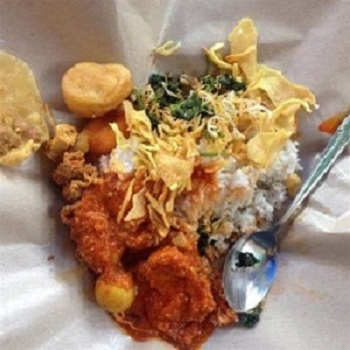

1.resep wingko
Bahan:125 gram tepung ketan;1 buah kelapa setengah tua, kupas dan parut memanjang;1/2 sdt garam; 1/2 sdt vanili bubuk; 100 ml air hangat; 100 gram gula pasir.
Cara pembuatan:
1. Campur tepung ketan dengan kelapa parut, garam, dan vanili bubuk. Aduk rata.
2. Campur air hangat dengan gula pasir, aduk sampai gula larut.
3. Tuang larutan gula ke dalam adonan. Uleni adonan sampai padat.
4. Bagi adonan menjadi 20 bagian. Bentuk bulat pipih.
5. Alasi loyang dengan daun pisang, taruh adonan wingko di atasnya.
6.Panggang wingko babat sampai matang dan berwarna kecoklatan.
2.resep nasi boran

A. Nasi Gurih
1.Rebus beras dengan santan, tambahkan bahan lainnya (kecuali minyak goreng), aduk rata
2.Tumis bawang putih hingga harum, tuang ke dalam rebusan beras. Tambahkan gula dan garam, aduk sesekali hingga santan habis
3.Kukus nasi hingga matang (40 menit). Angkat
B. Sayur Ikan Gabus Asam Pedas
1.Tumis bawang putih, bawang merah, dan lengkuas hingga harum
2.Masukkan santan, masak hingga mendidih. Masukkan bumbu dan bahan lainnya (kecuali kemangi), masak hingga matang. Matikan api, taburkan kemangi
C. Urap Sayuran
1.Rebus sayuran satu per satu
2.Remas daun singkong rebus, iris halus
3.Campur bumbu halus dan kelapa parut hingga rata.bungkus dengan daun pisang, kukus ±15 menit, angkat. Saat disajikan, campur sayuran dan bumbu kelapa hingga rata
D. Hati Ampela Goreng
1.Rebus air, masukkan hati ampela dan semua bumbu,masak hingga bumbu meresap. Angkat, tiriskan
2.Goreng hati ampela hingga kuning dan kering. Angkat dan sajikan
E. Gimbal Jagung Goreng
1.Campur bahan, bumbu halus, dan bumbu pelengkap, aduk rata
2.Goreng sesendok demi sesendok adonan dengan minyak banyak di atas api sedang hingga kekuningan. Angkat dan tiriskan
F. Peyek Teri
1.Campur tepung beras dan tepung kanji, tuang santan dan air sedikit demi sedikit hingga tepung larut. Masukkan bumbu, aduk rata
2.Panaskan minyak banyak di atas api sedang. Ambil 1 sdm adonan, tambahkan teri secukupnya. Tuang adonan tipis merata di tepi wajan. Siram dengan minyak panas di wajan hingga terlepas dari pinggir wajan. Goreng hingga kuning dan kering. Lakukan hingga adonan habis
Copyright@SZZ.22_101